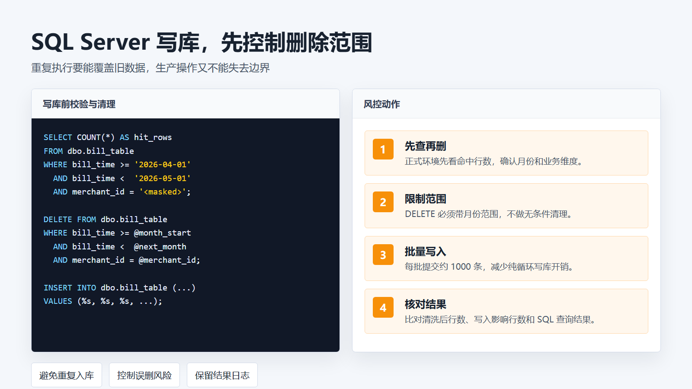
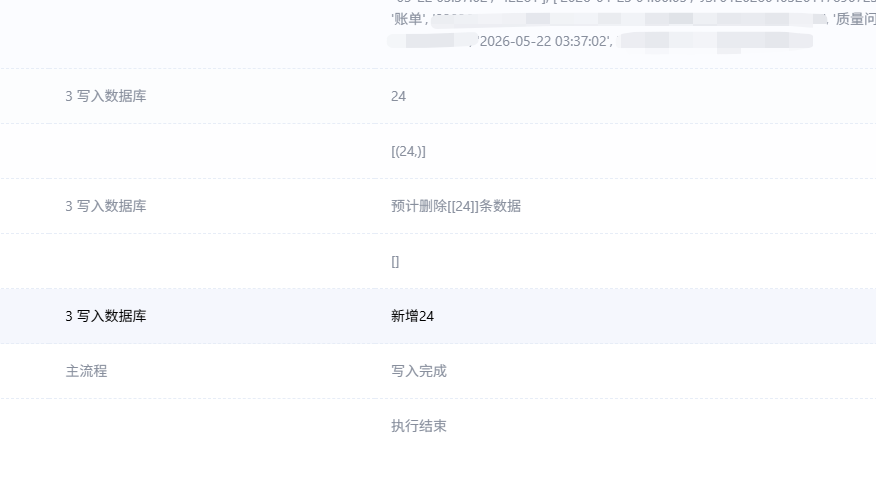

数据库阶段
SQL 写库与结果验证
目标
在控制旧数据处理范围的前提下批量写入新账单，并用行数和抽样结果判断本次执行是否可信。
1. 写库前先定边界
同月账单重复执行需要覆盖旧数据，但数据库处理不能失去边界。删除范围要同时约束月份和业务维度，正式环境先查命中数量。

2. 批量写入而不是逐行循环
单次账单数据量达到万级后，写库策略必须避开纯 RPA 逐行插入。项目使用批量写入思路，并把每批提交量控制在可观察范围内。
每批写入量：约 1000 条
重点核对：字段数、字段顺序、影响行数
重复执行：先确认旧数据范围，再写入新数据3. 流程日志用于验证节点
流程日志记录批量写入节点的执行结果；最终以账单批次的写入行数和字段核对结果为准。

4. 常见异常排查
字段错位
先核对 Python 输出字段顺序、每行字段数、写库字段数和占位符数量。
占位符不适配
当前组件对占位符的支持方式需要按实际驱动验证，报错时先从最小批量写入测试。
重复入库
检查旧数据处理范围是否同时带月份条件和业务维度条件，并保留删除和写入结果。
5. 阶段成功标准
| 结果 | 判断标准 |
|---|---|
| 清理范围 | 只命中目标月份与目标业务维度 |
| 写入结果 | 写入影响行数与清洗后数据量一致 |
| 抽样字段 | 时间、金额、状态和批次字段无明显错位 |
| 执行记录 | 日志可追踪本次下载、清洗、写库和异常信息 |
风险提醒
数据库删除和生产写入都属于高风险动作，正式执行前要先确认范围、备份和回滚路径。